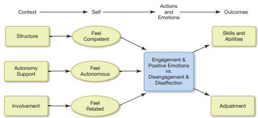
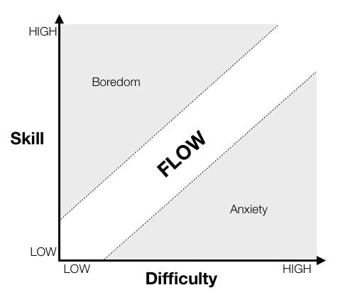
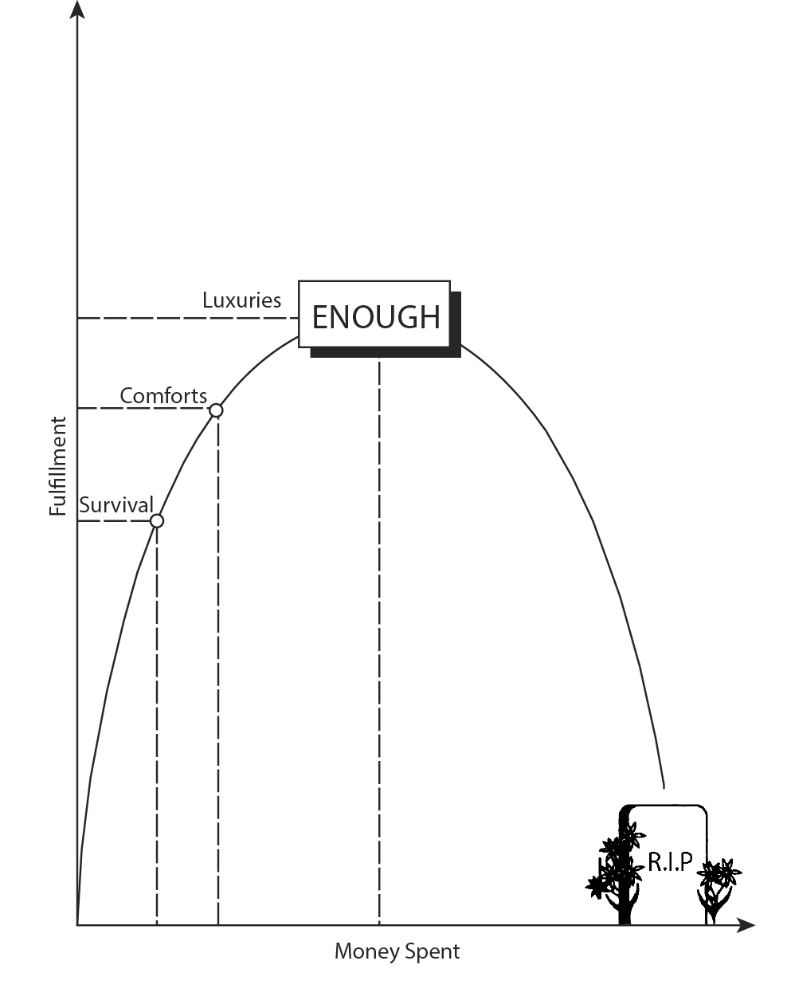
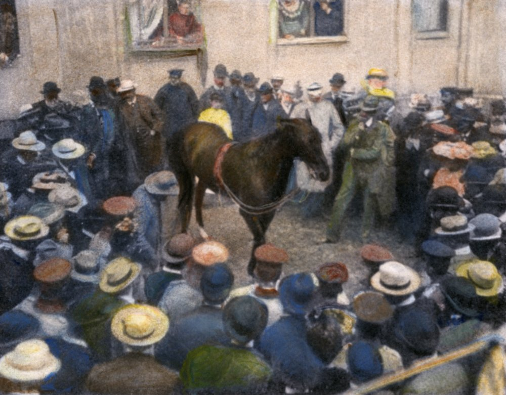
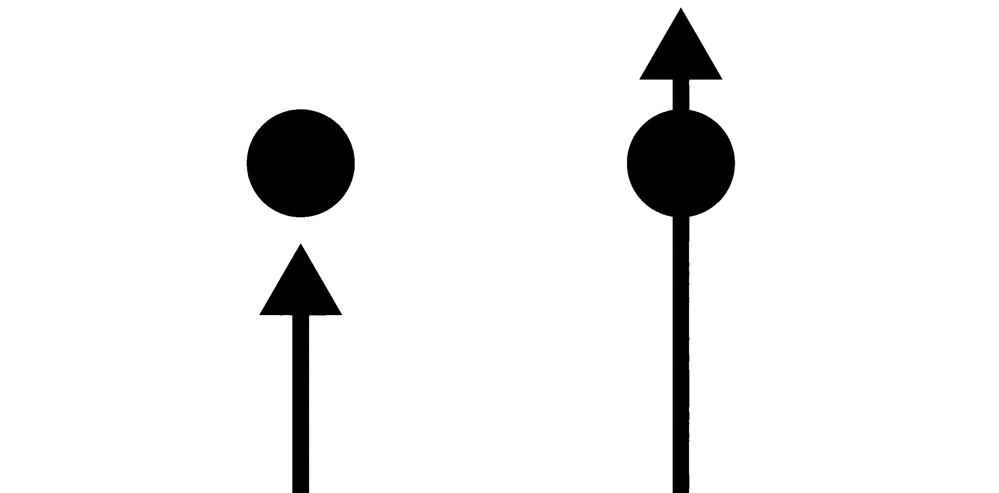

A Grave Threat to Mental Health
As William James taught, our experience becomes what we attend to; as Mihaly Csikszentmihalyi observed, fulfillment arises in full engagement; and as Adam Grant reminds us, when that engagement fades, we languish. Languishing occurs not from emptiness, but from attention left unanchored.
The following chapter integrates central ideas from various thinkers. I am not reinventing, but instead synthesizing their ideas. I want to carefully simplify and demystify the process that threatens our collective mental health. The danger isn’t any single modern behavior. It’s the systemic erosion of attention, autonomy, and meaning caused by fragmented engagement; it’s the progressive outsourcing of our attention, values, and thought processes, which dissolves our capacity for any immersion, meaning, and self-determination.
Our mental health declines once our psychological needs (competence, autonomy, and relatedness) are disrupted. However, once these needs are met, then we become self-determined (Deci & Ryan, 1985).

A motivational model of the effects of psychological needs on engagement.
Disruption #1: Task Switching
A task is a single piece of work, but it is the collection of tasks that ultimately forms a project. Focusing on projects rather than isolated tasks helps you see the bigger picture and what your work is truly building. Focusing too much on the tasks and what has to be done is being outcome-oriented which leads to languishing. This ties into the tantalizing pursuit for knowledge because as we learn more, then we develop ideas for what we don’t know. In this process of obtaining more knowledge, we can generate more ideas for getting what we want. In the short term it’s quick but in the long term it isn’t effective for our mental health because these imagined alternatives become distracting. We languish from this overwhelming feeling of being unable to halt this pursuit where the cost of remaining comfortably sedentary is unbearable. Languishing is purgatory between flourishing and depression. We fail to allocate our attention into a continuously immersive experience.
Perpetual task switching disrupts immersion. Cal Newport captured perpetual task switching in his idea of the hyperactive hivemind for modern work. Essentially, this is the idea that we are constantly task switching to accommodate for our reception of instantaneous notifications. He argues that there is no longer structure in the digital world, and I think its unpredictability is haunting us and coercing us into a state of languishing. Effectively, structures become shackles. In the West, along with greater freedom and self‑determination, came the anxiety and insecurity of never really knowing if you were working hard enough or doing the right thing. The Church’s expectations had always provided a way to measure goodness, and for many, these benchmarks no longer applied or were abandoned at the wayside. The loss of religion in society has been breeding an insecurity about one’s worth and purpose since there are no longer clear measurements and expectations. Remember the three parts of purpose according to Clayton Christensen? Religion used to supply the direction for achieving that purpose. A society that becomes materially rich but spiritually impoverished cannot sustain itself for long.
History shows that when material prosperity outpaces moral or spiritual grounding, societies tend to fracture from within. Rising wealth without shared meaning often leads to loneliness, consumerism, and a loss of collective purpose. People go into debt to buy more things, compete for prestige, and measure themselves against others by wealth and possessions rather than character or community. In other words, wealth is the means and people are the ends. Consumerism encourages individualism over solidarity, turning social relations into transactions and reducing human connection to economic logic. Over time, this fosters inequality, weakens communal bonds, and entrenches dependence on capital—what some have called “the perfection of slavery,” a system in which people willingly surrender their freedom to the pursuit of material gain. Without an inner compass, even abundance begins to feel empty—prosperity without purpose becomes decay disguised as progress. Collectively, these issues represent some of the most pressing challenges confronting the United States in 2025.
Languishing is not about control; it’s about how we influence outcomes. By reading this book, you should learn by now that we cannot control outcomes. In languishing, we influence outcomes but in the wrong ways. Maybe now, in contemporary times, we have such terrible ways of influencing our outcomes that they render our autonomy as obsolete. For example, dreaded modern emails will bombard your inbox—that is just an uncontrollable outcome. Yet what you can control is how you influence that outcome. Let’s suppose there are two influential choices:
- Answering emails immediately as their notifications ping in
- Batch answer emails once a day and deal with them in bulk
The first route doesn’t seem to make much sense because it would distract us from our present task each time that we get a ping. However, that’s the route we often choose because we want to immediately respond to our thoughts of who sent the email, its contents, etc. We have to task switch here because the longer we attempt to ignore responding, it solicits the rest of our attention until we open the email. Psychologically speaking, when we task switch, there is attentional residue. We cannot control when emails arrive, but we can control when and how to respond to them; this is how we influence them. In the same vein, I’m assuming we don’t fold one article of laundry then begin doing something else. Instead, we fold all of the clothes then we do something else. Thus, a better way of influencing outcomes is to not task switch. From what I know, flow state happens when you have enough competence in something and feel immersed in that something. Attentional residue from constantly task switching aggravates our immersive experience in flow state. Folding clothes is neither easy nor hard; it’s just the right level of competence. We can get in the flow of folding laundry, but not if we task switch after folding only one piece of clothing because the immersion is lost. We have to sustain that folding of laundry if we want to achieve that flow.

Task-switching interrupts that flow. It creates a discontinuity in our attention. We shift too quickly from one outcome to the next outcome. This ties into that telic thinking and being too goal oriented. The moment you hear that email notification ping, your thinking becomes telic—your brain immediately takes on a new goal: checking the email, regardless of what you were focused on before the notification arrived. Turn notifications off so you don’t have to worry about them. There’s truth in the aphorism “out of sight, out of mind.” The more knowledge and information you have, the more opportunities your brain has to task-switch—simply knowing something exists gives you the chance to think about it. In our modern world, where unlimited access to everything is constant, this cognitive overload has profound consequences. As Bo Burnham observed, having everything at our fingertips all the time has transformed apathy into a tragedy and boredom into a crime.
I am sure you have had a shocking thought and that you cannot get out of your head. Let’s imagine we are at a busy intersection and there is a sweet helpless old lady to our side. Any swift jab could knock her fragile being into the roaring traffic. We know that we would never do this, so why are we now fixated on this idea of pushing an old lady into traffic? Well, by setting this objective, our brain constantly measures how far away we are from reaching the objective even if we want to get away from the objective. In bad cases, this can lead to obsession. In good cases, we can use this to our advantage in the case of paradoxical intention, which is also commonly referred to as reverse psychology.
We can use flow state as a means of engagement to keep languishing at bay.
I think this statement is the perfect distilled essence for approaching self-determination. We’ve maintained constant task-switching, especially during the pandemic, which undermines our ability to act with true self-determination. We have let outcomes control us rather than us influencing the outcomes. To end languishing, try starting with small wins. These small wins force us to micromanage ourselves and focus on achieving small bouts of flow. Languishing is not merely in our heads it’s in our circumstances. And more importantly I think, is how we influence and perceive these circumstances. Outcomes are inevitable and thus avoidance strategies would be futile.
In order to achieve that flourishing, we need to increase engagement strategies towards those outcomes. Not being outcome oriented and not having goals is not an option. No matter what, you will always be teleologically measuring against an outcome. Not having goals is itself a goal. In teleology Aristotle had made the distinction between telic and atelic activities. Telic activities serve some instrumental means to an end which will seduce us to the hedonic treadmill. In contrast, atelic activities are in and of themselves; they are performed for their own sake, not in order to achieve a particular end. For instance, you do hobbies because you like it. The activity is its own reward. You are not aiming for expertise; You are aiming for fulfillment.

Do not believe that money = fulfillment. Remain at the peak of the curve: ENOUGH. It is fully appreciating and enjoying what money brings into your life and never purchasing anything that isn’t needed and wanted. A wise man can make use of whatever comes his way, but it is in want of nothing. On the other hand, nothing is needed by the fool for he does not understand how to use anything but he is in want of everything.
With so much information at our fingertips and constant opportunities to compare ourselves to others, it’s easy to get caught up in telic activities—actions driven solely by goals or outcomes. True contentment, however, comes from cultivating an atelic perspective: learning to find satisfaction in the activity itself rather than in its results. This aligns with a central tenet of Stoicism: embrace and enjoy the things you are doing, regardless of circumstances, because the only things you can truly control are your own choices and attitudes.
Trust yourself. Too often, we get caught up in ten-step guides or the latest advice on optimizing every aspect of our lives. But here’s the truth: no one knows you better than you do. We live in a society obsessed with solving other people’s problems—and having others solve ours. Take the time to listen to yourself, with genuine attention, to the quiet, undernourished voice that yearns to guide you toward a meaningful path. Its counsel may feel daunting at first, but the more you listen, the clearer and stronger it becomes. The ability to listen deeply is a superpower. And when you listen to someone you love, keep asking, “Is there more?”—until there truly is no more to hear.
Approach circumstances sincerely and not seriously, that way, you will find more enjoyment. Productivity is less about doing more and more about finding fulfillment in the journey itself, rather than simply optimizing outcomes. Be careful not to fall into the trap where enjoyable things like vacations become something to get done, rather than something to enjoy. The price of higher productivity is always lower creativity. When we enjoy what we’re doing and we’re competent enough, we can get immersed in flow state and use that as a means of engagement. Eventually we achieve self-determination.
All of these things shouldn’t require motivation if it is intrinsic. No one needs willpower to avoid eating a chocolate bar if there isn’t one nearby, or to do something they genuinely want to do. Motivation should primarily be reserved for enduring short-term discomfort in pursuit of longer-term goals—a challenge most of us struggle with, known as delay discounting. We are naturally drawn to instant gratification, yet it is our capacity for reason and foresight that allows us to plan ahead. The lure of immediate feedback, however, can trap us in a cycle of languishing, constantly task-switching from one outcome to the next. Remember: don’t train yourself in habits you don’t want to embody.
Disruption #2: Additive Solutions
To make matters worse, we often pile more onto our plates, unintentionally catalyzing languishing by disrupting deep immersion. Busyness has become a celebrated phenomenon, tightly intertwined with hustle culture. Professor Cary Cherniss defines burnout as the bureaucratic infringement on a professional’s autonomy. Many believe they’re “making a living,” when in reality they’re “making a dying.” In Japan, this extreme overwork is called karoshi—death by overwork.
One reason busyness persists is our systematic default toward additive transformations: we instinctively look for what we can add, rather than what we might subtract. We prefer to “let live what lives,” to keep all functionality if possible. Subtractive solutions are rare, not because they lack value, but because they’re rarely considered. The common heuristic seems to be: What can we add here? This bias can be countered by deliberately exerting cognitive effort to explore less intuitive, subtractive solutions. But the question remains: why does our thinking favor addition over subtraction in the first place?
- Subtractive solutions are less likely to be appreciated. People might expect to receive less credit for subtractive solutions than for additive ones. A proposal to get rid of something might feel less creative than would coming up with something new to add, and it could also have negative social or political consequences—suggesting that a department be disbanded might not be appreciated by those who work in it.
- People could assume that existing features are there for a reason, and so looking for additions would be more effective.
- Sunk-cost bias and waste aversion could lead people to shy away from removing existing features, particularly if those features took effort to create in the first place.
We all face distractions from the deeper work we know truly matters: confronting what isn’t going right in our lives, developing an important idea, or spending more time with those who matter most. Yet we delay and divert. It’s easier to criticize someone else than to take pride in our own accomplishments. Screaming at the out-group comes far cheaper than investing in the in-group. Seeking amusement is simpler than pursuing something meaningful. When confronted with a complex problem, humans cannot consider every possible solution, so we rely on heuristics to narrow the field to a few promising options. As research shows, these heuristics are biased toward additive solutions—adding more components—rather than considering what might be subtracted.
Defaulting to additive solutions may help explain why people struggle to manage overburdened schedules, bureaucratic red tape, and the damaging effects we impose on the planet. Think of the epidemic of chronic overload that now afflicts so many knowledge workers. The volume of obligations on our proverbial plates: vague projects, offhand promises, quick calls, and small tasks. They all continue to grow at an alarming rate. Not long ago, a standard response to “How are you?” might have been a simple “fine.” Today, it’s rare to encounter anyone who doesn’t answer instead with a weary “busy.”
Adding more things includes distractions too. When, in fact, less is more. Following Occam’s razor, (law of parsimony), no more assumptions should be made than are necessary in explaining a thing. The principle is often invoked to defend reductionism or nominalism. Morgan’s canon is an equivalent adaptation for explaining animal psychology: never attribute a behavior to a more complex mental event if a simpler one can do. Usually the longer the explanation, the bigger the lie. It isn’t the lie that wounds, but it’s the loss of trust that follows.

Unknown artist, Clever Hans Being Tested in Berlin, 1904. Oil over photograph. The German ‘Thinking Horse’ that seemed to be able to perform complex mathematical calculations and answer questions by tapping his hoof. However, it was later discovered that Hans was actually responding to unconscious cues from his trainer and the audience, rather than genuinely understanding the questions or performing calculations. This phenomenon became known as the Clever Hans effect, highlighting the potential for animals (and humans) to unintentionally respond to subtle cues in their environment. Correlation does not equal causation.
Seneca said, “Until we have learned to go without them, we fail to see how unnecessary many things are.” Too often, we use things not because we need them, but simply because they are available. This is a distinct challenge of our time. We often find ourselves mindlessly watching YouTube videos or endlessly scrolling through TikTok, simply because we can. Instead, consider replacing your daily scroll with a daily stroll. If we were unable to engage in these habitual, automated behaviors, our lives wouldn’t be diminished—in fact, they would likely become much more fulfilling. Do as little as needed, not as much as possible. We’re unhappy because we’re insatiable. After working hard to get what we want, we lose interest in the object of our desire. Rather than feeling satisfied, we feel a bit bored, and in response to this boredom, we go on to form new, even grander desires.
The easiest way to gain happiness is to want the things you already have.
You are living the dream you once had for yourself. We’re only at the base of the exponential. Think about the positions of your ancestors: unfortunately, they will never have the experience of getting to live with the modern pleasures that you have. When we feel the delta between ‘where we are’ and ‘where we imagine other people are’ it hurts. Unless, we look at ‘where we are’ and ‘where we used to be.’ Human life is gradually turning from a struggle against starvation into a struggle against addiction. We’re constantly being pampered with new comforts and conveniences, and before we can begin to appreciate one we’re offered another.
If we focus on rediscovering and re-enjoying what we’ve begun to take for granted—the simple, essential things like our health, homes, and loved ones—then we fill the void in our hearts that would otherwise lead us to endlessly chase dopamine hits. It’s better to get your dopamine from improving your ideas rather than having them validated. If you are ever tempted to look for outside approval, realize that you have compromised your integrity. If you need a witness, be your own. Never talk about what you will do, just do it. Telling people about it gives you the neurochemical reward as if you had actually done it.
Being selective about the objects and commitments in your life is essential. True perfection isn’t achieved when there’s nothing left to add, but when there’s nothing left to take away. Continuous improvement matters more than delayed perfection—after all, perfection is often just procrastination disguised as quality control. Stop dwelling on past decisions; you made the best choice you could with the knowledge you had, and it’s time to be at peace with that. Every action you take is a vote for the kind of person you will become. Do something today, and you make it more likely that you’ll do it again tomorrow.
Disruption #3: Outsourcing Processes
Given our tasks, I have mentioned two ways in which they disrupt immersion: task switching and adding too many tasks. Now, when we have multiple task processes to attend to, then we might decide to outsource those processes. Yet, in doing so, you obviously can no longer be immersed in those processes anymore; you are abandoning the development of values. Clayton Christensen has warned about the dangers of outsourcing processes. By letting go of your core processes and values, you risk losing touch with who you truly are, becoming defined only by external possibilities instead of the person you are meant to grow into. For example, thinking is a task we often outsource. When you choose ‘what to think’ instead of ‘how to think,’ you are outsourcing processes; specifically, the process of thinking. Allow me to make the distinction between ‘what to think’ and ‘how to think.’
I’ve overhauled my tools that help me ‘how to think.’ I’ve been afforded the time in Summer 2020 to really adjust my perceptions of the world. Let’s take a knife for example: When you hone the knife regularly, you’ll have to sharpen it less often. I’ve honed my tools regularly so that I have to sharpen them less often. Okay, enough with the knife metaphor, what do I really mean here. Well, ‘what to think’ is leveled thought and ‘how to think’ is layered thought. Leveled means you sequentially process components whereas layered means that you can simultaneously process components at once.
- Leveled: Thoughts are serial like the runners passing off a baton in a relay race. This is serial processing.
- Layered: Thoughts are paralleled like the runners leaving at the same time but can go in different places. This is parallel processing.
One way I’ve learned to develop greater depth in my thinking is by diversifying my sense of identity. I’ve been intentionally stepping away from thoughts focused solely on myself, since dwelling only on the self tends to fuel decisions driven by ego rather than purpose. I’ve been loitering more with thoughts that pertain to the collective. This has led me to make decisions that are beyond myself and serve a purpose. In other words, passion serves yourself and purpose serves beyond yourself. People like to simplify people in order to make sense of things in their own head. The tribe around you reinforces your brand by putting you in a clearly-labeled, oversimplified box.
Trust me: there is no “them.” No ingroup or outgroup exists. If you trust the source, you don’t need excessive supporting evidence. The key caveat is to ensure that the environment and conditions in which the original wisdom was shared remain consistent, so you avoid misinterpretation or distortion. When you realize we’re all just humans—sometimes doing good things, sometimes bad, some more animalistic than others—you begin to live more clearly. At our core, we are all human, and recognizing this allows for greater compassion, understanding, and perspective.
For example, instead of thinking ‘I have to do something’ I think ‘I get to do something.’ Given my current circumstances, I am afforded the opportunity to get to do this something. This line of thought has helped me to become more layered and think beyond my own self. It sets a frame of perspective that discourages thinking in levels or ‘what to think.’ I used to think in levels of happiness. You have an idea of an outcome (happiness) but have no idea of means in which to achieve such an outcome. I knew ‘what to think’ about happiness but I didn’t know ‘how to think’ about happiness. So, I was determined to learn ‘how to think’ about happiness. In contrast to happiness, depression might serve as the response to the ‘super-stimuli’ which make our lives more comfortable. Have super-stimuli and modern luxuries rendered many traditional processes obsolete? Yes. Take tradition, for example: it consists of solutions for problems we have often forgotten. Remove the solution, and the problem frequently returns. By abandoning these processes, are we also losing fulfillment, purpose, and ultimately, the deeper sense of happiness or meaning they once provided?
Let’s use a phone as a metaphor. I’m presuming you have no idea how the phone operates from a layered frame of thought. However, from a leveled frame of thought, you probably know how the phone operates: you tap a few times and you’re calling someone. A layered frame of thought would consist of knowing the minutiae of technology that gives rise to the phone as we know it. But how exactly does that calling work? What are the buttons doing to communicate to the phone what I want it to do? In technology, APIs are bridges over the layers and onto the outcomes. If we had the time to actually care enough to understand how the phone actually ‘thinks’ we’d probably be much more appreciative of it. This is exactly the point about ‘how to think’: it’s time consuming. ‘What to think’ is so much easier! You can jump to conclusions quicker because you take a one-way shortcut route. The whole is greater than the sum of its parts, but the whole wouldn’t exist without its parts summed. The whole is often an emergent property. Moving away from phones, but in the same vein, prevention of disease usually requires lifestyle changes. This is harder to sell and implement. Many people prefer taking a pill over changing their diet. Progress is abstraction. The issue that stems from abstraction is people get alienated from complexity and start to believe things are easy. That’s just humans being humans. Actually, putting all those things behind an easy interface is ridiculously hard. It’s really, really, really hard to do. It’s really hard to make something easy.
Treatment is easier and more profitable. The system is built around that. If the treatment isn’t working, question the diagnosis.
You would think that going to school is about learning and acquiring skills, but then why do students pay tens of thousands of dollars for Ivy League schools when all of the learning material is effectively available online for free? Why do we use grading systems when we know that students learn worse when being graded? The answer, again, is signaling: education helps with credentialing and signaling to potential employers. Employers have not the time to inquire about this process/journey of self-disciplined education. Instead, they want to see ‘Harvard’ on a resume from the person, hire that person on the spot, and call it a ’satisfice’tory day. Yeah, this choice is a heuristic that works pretty much most of the time (on prestige resume paper), but it is sincerely unfair to the genuinely academically-driven student. I suppose such is a realistic outcome of life.
Gurwinder Bhogul, Why Smart People Hold Stupid Beliefs:
For centuries, elite academic institutions like Oxford and Harvard have been training their students to win arguments but not to discern truth, and in so doing, they’ve created a class of people highly skilled at motivated reasoning. The master-debaters that emerge from these institutions go on to become tomorrow’s elites—politicians, entertainers, and intellectuals… Master-debaters are naturally drawn to areas where arguing well is more important than being correct—law, politics, media, and academia—and in these industries of pure theory, secluded from the real world, they use their powerful rhetorical skills to convince each other of fashionably irrational beliefs (e.g. wokeism). During their master-debatery circlejerks, the most fashionable delusions gradually spread from individuals to departments to institutions to societies… Naturally, woke intellectuals don’t consider themselves alarmists or conspiracy theorists; they believe their intelligence gives them the unique ability to glimpse a hidden world of prejudices. What they don’t know is that high IQ people and low IQ people display similar levels of prejudice, except toward different groups, and educated people actually display greater prejudice against those with different views… Despite being irrational, wokeism is nevertheless an intelligent worldview. It’s intelligent but not rational because its goal is not objective truth but social signaling, and in pursuing this goal it’s a powerful strategy. People who engage in woke rituals, such as proclaiming their pronouns during introductions, or capitalizing the word ‘black’ but not the word ‘white,’ signal to others that they’re clued-up, cosmopolitan, and compassionate toward society’s designated downtrodden. This makes them seem trustworthy and likable, and explains why wokeism is most prevalent in industries where status games and image are most important: media, academia, entertainment, and corporate advertising.
This is exactly what institutions like Yale mean when they talk about training leaders: producing people who make a name for themselves, who accumulate impressive titles, who give the university bragging rights. People who reach the top—climbing the greasy pole of whatever hierarchy they attach themselves to. But without the ability to reason, you cannot truly evolve or adapt. If the dogma you grew up with fails you, rejecting it as an amateur reasoner often just lands you on another lifeboat—another set of rules, another authority to obey. You haven’t learned to code your own software, so you install someone else’s.
For example, someone says: “Our president is a buffoon!” Well. Okay. Sure. You may be right, but are you effective in conveying your thought? No, you’re not effective because you are telling me ‘what to think,’ not ‘how to think.’ You are merely telling me the outcome without providing me how you got there. Of course, don’t solicit how you got there unless someone asks. People might not care enough to hear beyond the buffoon part; they could simply be satisfied by hearing the outcome. That’s completely fine! We don’t have to understand the layers because our beautiful liberties permit us the choice! However, if you’re curious, a better approach to conveying that statement could be: “Our president unconditionally accepts plaudits, yet vehemently dismisses antagonistic criticism as demonstrated by X, Y, and Z.” Of course, we’ve never witnessed that sort of statement. Reasonably so. We’ve presumably taken a long time to arrive at our outcome and want to just quickly state our outcome because people have neither the time nor care to hear how you arrived at that outcome. To avoid the labor of ‘how to think,’ we reluctantly and trustfully defer to the expertise of ‘experts’ who dedicate their time to quibbling over such layers.
Going back to our example with happiness, nobody has made a proper invention that takes the layers out of happiness. There is no simple ‘phone metaphor’ equivalent for happiness: Money? Sex? Drugs? Those routes are all leveled approaches to thinking about happiness. ‘What to think’ about happiness will not help you; you are only thinking about the outcome. In contrast, ‘how to think’ about happiness will help you to understand how to approach that outcome. Thinking in layers provides you with the many paths that lead you towards your intended destination. There’s an impasse along one path? Okay, that’s fine. Take the other path or the other path. You also begin cultivating complex associations between paths.
One of the oldest traps in human practice is the tendency to cargo-cult methods—copying rituals without understanding their underlying principles, concepts, or motivations. People often mimic the form while missing the mechanism that makes it effective.
A child’s instinct isn’t just to know what to do or not to do—they want to understand the rules of their environment. And to truly understand something, they need to grasp how it was built. When parents or teachers simply tell a child to do X or Y and insist on obedience, it’s like installing pre-designed software in the child’s mind. When children ask Why? repeatedly, they’re trying to deconstruct that software, to get down to the first principles, so they can judge how much weight to give the adults’ instructions.
This struggle might feel exhausting, but it’s worth enduring. Lessons, commands, or bits of wisdom given without revealing the reasoning behind them are like being handed a fish instead of being taught to fish. Growing up this way leaves us with a bucket of fish but no rod—a set of installed programs we can operate, but no ability to code our own. I’m hoping I’ve sparked some curiosity in you so that you begin caring enough to understand ‘how to think’ and not ‘what to think.’ Think for yourself, don’t let others think for you. You have your own unique experiences. How does your journey towards the outcome change when you learn ‘how to think?’
Seneca once suggested that sometimes we are the worst obstacles to our own improvement. We may be the obstacles because we are only thinking about ourselves. Start learning ‘how to think’ by beginning the construction of your layered thinking. The fact that a layer’s protocol both constrains and deconstrains a system is crucial. It delineates optimal choices for specific scenarios. Constraints give your life shape. Remove them and most people have no idea what to do: look at what happens to those who win lotteries or inherit money. Take the time to examine your thoughts in order for you to live better. Investing time in yourself is always a worthy investment.
In addition to thinking, we have also outsourced many of our cultural values. Now we are riding the inertia of old values. The momentum of capitalism and democracy are riding on old cultural values based on religion. Business is the most important way in which human beings cooperate. In his Philosophical Letters, Voltaire understood that if diverse people are to cooperate, they must focus on their common interest and leave other predilections, like religion, at home. Unfortunately, the woke movement is bringing religion along with every other aspect of life back into business. These days, corporations that don’t go woke are forced to go broke. Wokeism is a popularized academic worldview that blends moral urgency with elements of conspiracy thinking. It frames racism, sexism, and transphobia as systemic features of Western society and often targets white people—particularly straight white men—as the primary enforcers of these biases, accused of preserving their place atop social hierarchies. Historically, the left’s compassion for the disadvantaged has sometimes tipped into contempt for the privileged. What began as a movement for antiracism, critics argue, has in some cases evolved into a form of prejudice directed at white people. Offended by everything, yet ashamed of nothing, this mindset often prioritizes moral signaling over nuanced understanding or constructive action.
People develop an identity around a label and become a victim to opposition.
The religions have changed, but Voltaire would not have been surprised at the consequences: a breakdown of cooperation and amity. Remaining mission-focused sustains cooperation among diverse groups of people, operating at a high level of performance. As a result of abandoning being mission-focused, and adopting wokeness, the woke movement has led to the cancellation of many people. This is because we now have certain people policing values that no longer come instinctively to us. Values once came to us instinctively through religion, but as society has moved away from organized faith, we now outsource our values from elsewhere. Though Christianity, Judaism, and Islam may seem different, they are all Abrahamic religions, sharing a common foundation in the Old Testament and overlapping ethical principles—most notably, the universal Golden Rule.
When there is no common bond, we cannot know how to work separately as a means of working together. Puzzles don’t come already put together in the box, but they still make beautiful pictures in the end. Mosaics and constellations rely on their parts to make a beautiful picture and kaleidoscopes offer new perspectives on those patterns. Yes, the beauty of the garment is made by the threads that stand out, but it’s equally true that the nail that sticks out gets hammered down.
Stanisław Masłowski, Rising Moon, 1884. Oil on canvas.
The world seems to be losing its mind. No one is sure what the rules for acceptable conduct are any more. From virtue signaling to moral grandstanding, the incentives to take down others are stronger than ever. The opposite of a beginner’s mind (shoshin) is the jaded mindset of “I already know this.” It is the implicit competing commitment that if you don’t signal your expertise to the people around you, you lose your identity because your intellectual accomplishments define you as an individual. This may be a cognitive distortion. Self-worth theory is the tendency of some students to associate their human value with their school grades. When you leave school, you may tie such a tendency to your work, or the money you earn. Similar to my situation outlined in the preface of this book.
Your ego—the force of resistance against a beginner’s mind—gets in the way.
The middle way of life is something I think of as committed and unattached:
- Committed: You are fully committed to the goal. You work at it as if it were one of the most important things in the world. You give it your all. You focus, you go after it. You care deeply.
- Unattached: While you’re committed to making it happen, you are unattached to the outcome. You care about the outcome but you’re okay if it doesn’t happen. You love life and yourself no matter what happens.
Think of it like really taking care of a seedling, and then the sapling that grows from it, then the tree, with your full devotion—but then not needing the fruits that might or might not spring from the tree. This is one of the key lessons from the sacred text, the Bhagavad Gita: to give yourself with full devotion to your life’s purpose, but then to ’let go of the fruits. In the same way, decision-making requires fully committing to the process and your actions, while accepting that the ultimate outcomes may be beyond your control. Seeking more information has diminishing returns. Perfection is impossible because unknown variables always exist. Instead, we satisfice: choosing the best option with the information and resources available, accepting trade-offs. Time constraints can focus decisions but also trigger panic; the key is decisive action and clear communication. Decision-making continues through execution, then feedback lets you adjust, refine, and improve. Stay humble, receptive, and iterative, recognizing that you never know everything.
For example, we’ve adopted busyness as a new value in our culture: people signal busyness because that’s what the world currently values. The result is like rearranging the deck chairs on the Titanic; an activity that creates the illusion of progress while ignoring the deeper problem that’s sinking the ship. Additionally, Terror-Management Theory explains the crafting of values that ignore or avoid inevitable death. These values may be a byproduct of the inescapable finitude and uncertainty of existence, which we all need to face and deal with at some level.
Robin Hanson suggested that beliefs become entrenched. Belief entrenchment occurs because many traditional institutions are opting to incur marginal costs over adopting better long-term full costs. There’s a tremendous bias against taking risks. Everyone is trying to optimize their ass-covering. The wise of every generation discover the same truths. Tradition is a set of solutions for which we have forgotten the problems. Take the solution away and often the problem comes back. In accordance with Nature, some problems will simply always exist and you have to coexist with them. If you think that there’s a solution to these sorts of problems, then you’re part of the problem.
People now spend more on eating out than on groceries. Too lazy to cook, too lazy to learn how to cook, they “outsource” the process—driving around to eat out while expensive kitchens gather dust, and spending free time watching cooking shows on TV. The cost is high: money spent, skills lost, and satisfaction forgone. When essential processes are outsourced, efficiency, mastery, and the deeper fulfillment that comes from doing things oneself are sacrificed.
By outsourcing numerous processes to AI, we are poised to witness AI disrupt and redefine many established norms and institutions. Alex Tabarrok from Marginal Revolution says:
Indeed, within a decade, ordinary people will have more capabilities than a CIA agent does today. You’ll be able to listen in on a conversation in an apartment across the street using the sound vibrations off a chip bag. You’ll be able to replace your face and voice with those of someone else in real time, allowing anyone to socially engineer their way into anything. Bots will slide into your DMs and have long, engaging conversations with you until it senses the best moment to send its phishing link. Games like chess and poker will have to be played naked and in the presence of currently illegal RF signal blockers to guarantee no one’s cheating. Relationships will fall apart when the AI lets you know, via microexpressions, that he didn’t really mean it when he said he loved you. Copyright will be as obsolete as sodomy law, as thousands of new Taylor Swift albums come into being with a single click. Public comments on new regulations will overflow with millions of cogent and entirely unique submissions that the regulator must, by law, individually read and respond to. Death-by-kamikaze drone will surpass mass shootings as the best way to enact a lurid revenge. The courts, meanwhile, will be flooded with lawsuits because who needs to pay attorney fees when your phone can file an airtight motion for you?
In Sum
Languishing threatens our mental health since it’s a state where immersive experiences are disrupted by:
- Task switching: Outcomes are inevitable simply because of our responsibilities for accomplishing them and that we are telic-thinking creatures in our evolutionary nature. However, the ways in which you influence them must limit the opportunities for attentional residue.
- Additive transformations: Adding distractions in the form of more tasks that masquerade the truly important tasks festering underneath.
- Outsourcing processes: Reflexively adopting leveled perspectives over layered perspectives because of both time and cognitive effort. Simply teleporting to the destination instead of journeying along has made a unified culture of values appear distant and unfamiliar.
The key to leading a high-performance life is to redirect our attention from the world outside us to the world inside us and to learn the art of not outsourcing our well-being, happiness, or identity to other people. Why? When we conform to the opinions or judgments of others, we limit our potential. When Stoics tell us to want things to be as they are and relinquish our passions, they aren’t telling us to eliminate our ambitions. They are telling us to stop being motivated to, and to start being motivated through; through the journey, not to the outcome.

The through orientation to goals is an infinite game. We don’t ever expect to ‘get there’ because it is the process itself that is rewarding. Infinite games bring infinite satisfaction.
It is not in the pursuit of happiness that we find fulfillment, but in the happiness of pursuit itself. Languishing threatens our mental health because it disrupts immersive experiences, scattering attention across tasks, distractions, and external pressures. Task switching pulls us away from the present by leaving attentional residue; additive transformations—extra tasks that masquerade as important—bury what truly matters; and outsourcing processes—reflexively adopting others’ perspectives or relying on external validation—distances us from our own values, well-being, and sense of purpose.
One practical approach to combating these challenges comes from Cal Newport: the use of Kanban boards. Popular among software developers, these boards help visualize work, manage priorities, and replace the hyperactive hivemind of constant distractions with deliberate, focused action. By doing so, they reduce cognitive overload, limit unnecessary task switching, and create space for meaningful engagement—allowing attention to flow back inward rather than endlessly outward.
Missing out is part of what makes life worth living. By consciously choosing not to do certain things, we accept our finitude in a world of infinite possibilities. Imperfection is life, and making decisions with incomplete information—satisficing—teaches us to act through the journey rather than toward an imagined perfect outcome. Decisions carry consequences and responsibility, but they also cultivate mastery over our attention, focus, and values.
Ultimately, a high-performance life is not about maximizing activity or efficiency—it is about mastering the art of not outsourcing your well-being, happiness, or identity. It is about committing to imperfect actions in the present, cultivating deliberate focus, and finding joy in the pursuit itself. That is the essence of a well-lived life: embracing the finite, limiting distractions, and discovering fulfillment not in achieving a flawless future, but in fully inhabiting the imperfect now.